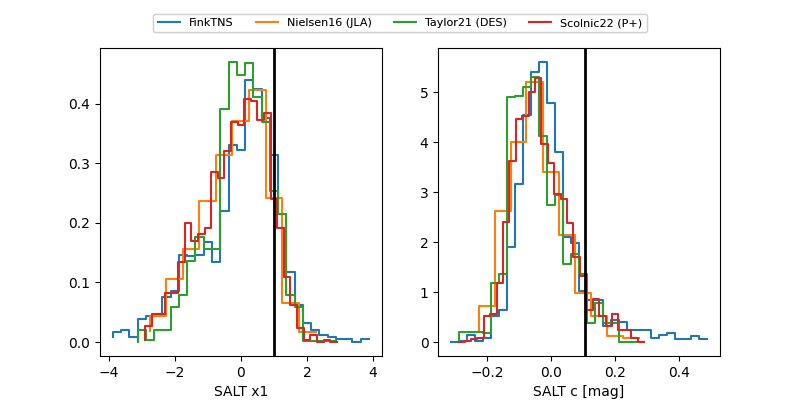

FINK: ZTF25abogfap
Lasair: ZTF25abogfap
ALeRCE: ZTF25abogfap
TNS: 2025wnt
YSE: 2025wnt
ZTF25abogfap (ztf,fink)
2025wnt (tns,yse)
ATLAS25kwn (atlas)
equatorial (ra, dec) = (72.5553,+8.13407)
galactic (l, b) = (190.4504,-22.33644)

last atlasc=18.22, atlaso=17.43, ztfg=17.38, ztfr=17.44
2 atlasc, 9 atlaso, 2 ztfg, 4 ztfr detections